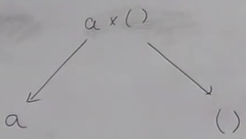
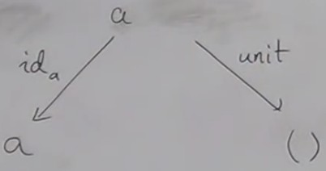
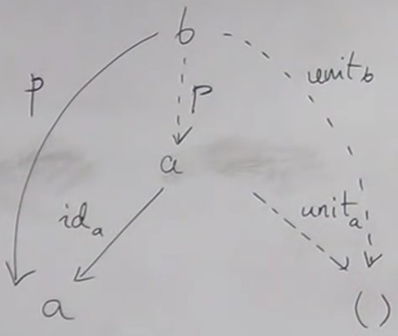
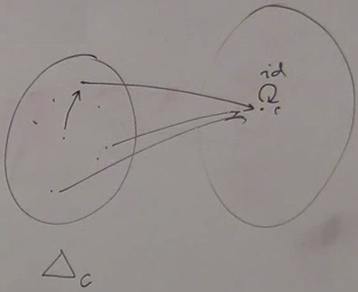
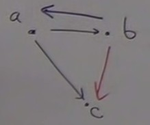

Monoids were defined in video 3.1.
In a monoidal category, we would like to define things like "what does it mean to multiply two objects".
When we were talking about monoids, we were talking about operations on elements of a set, or on morphisms, which are elements of the hom-set.
But here we talk about defining multiplication of objects.
We already have categorical product, which is one part of a monoid, the binary operation ; in order to make it a monoid we need associativity of the operation, and a unit for multiplication.
Unit
In Haskell, the unit type was noted (), which is a singleton set, defined for a category in general as a terminal object.
Not every category contains a terminal object, nor a product.
But suppose we have a category with product and terminal object.
We can show that this terminal object is the unit.

We neeed to prove that a x () = a.
Wa have these two projections id a and unit and a is the candidate.

Since () is the terminal object, we know that there is a unique morphism from a to ().
Then a is a suitable candidate, but is it the best ?
So we consider an other object, b, and its two projections, and we have to show that there is a unique morphism from b to a.

(dashed lines represent uniques morphisms)
This morphism is just p, and it's unique because this is the only morphism such as id a o p = p.
The unit is then the terminal object.
A product is defined up to a unique isomorphism ; this is the equivalent in Haskell of (a, ()) ~ a, we have an equivalence, not equality.
So if we have a category with categorical product for every pair of objects and a terminal object, then we have this monoidal structure on objects.
We can do the same with coproduct, and the unit would be the initial object ; this would also be a monoidal category.
In general, we need a binary operation on objects that is a bifunctor and a unit for this bifunctor, and we have a monoidal category.
There are some subtleties, for example associativity, like unit is defined up to isomorphism, this is called lax.
The product of a monoidal category is called a tensor product, noted ⊗. The unit is often noted 1
Algebraic data types (ADTs) as functors
So Haskell is a monoidal category both in product and coproduct.
This discussion started saying that ADTs are functorial. So far, we've seen that product and coproduct are functorial. To have a functor, we need to have a type constructor, which takes a type as argument and produces a type. But what about trivial constructors like Bool ? It's not functorial because it doesn't depend on any type. But we can tweak it considering that it depends on a type in a trivial way.
The Const functor
The constant functor (introduced in video 6.1) maps every object in a category to a single object, the "black hole" functor. Δc, parametrized by c.

data Const c a = Const c
a is the functorial parameter ; a disappears it is ignored to define a constant.
In the statement
data Const c a = Const c
, notice that the first Const is a data type and the second Const is a type constructor. The have the same name but do not live in the same namespace.
instance Functor(Const c) where
-- fmap :: (a → b) → Const ca → Const cb
fmap f(Const c) = Const c
As a functor, here we have an empty container.
The identity functor :
data Identity a = Identity a
fmap f(Identity a) = Identity(f a)
This functor accepts an element of type a and keeps it, a container that only contains one value.
It just applies a function to its contents.
ADTs as functors
Now that we have Identity and Const functors, we can combine them with sum and pn taroduct, which are also functorial. So we can take any data type and construct it using these functors.
Example : define the Maybe data type ; we showed explicitly that it's a functor, but now we can say it's a functor because it's an algebraic data type.
data Maybe a = Nothing | Just a
is equivalent to
Either () (Identity a)
.
() is Const () a Const () a is a functor, (Identity a) is a functor, Either is a bifunctor. The composition of a bifunctor and two functor is a bifunctor. So Maybe is a functor.
All algebraic data type can be turn to a functor with this procedure, which can be automated.
In fact, this is automated by an extension of Haskell :
{ -# LANGUAGE DeriveFunctor #-}
data Maybe = ...
deriving Functor
And the compiler knows how to derive fmap.
If the data type is parametrically polymorphic, we get a theorem for free, if we have two fmap, they have to be equal.
Function type
( → ) = a → b
Arrow is a type constructor. It takes two types a and b and produces a third type, the type of function from a to b.
Strictly speaking, we have not talked about function types, for now we consider that we know what function type is.
We already saw that the arrow is functorial in the second argument, let's call it Reader functor.
data Reader c a = Reader(c → a)
fmap = (.)
If we want to apply a function, we just apply it to the returned type.
This is the third binary type constructor : product, coproduct, and now function type ; is it a bifunctor ?
Here we fixed c, the argument type.
Let's fix a, the argument type.
data Op c a = Op(a → c)
-- fmap :: (a → b) → Op c a → Op c b
a → c b → c
c is fixed and we vary a.

We want to construct the function from b to c. For two arbitrary functions, one from a to c and one from b to c, we have no way of doing it, except if we cheat.
If, instead of having a → b, we had b → a, we could do (b → c) = (a → c) o (b → a).
The trick is to define a functor in the opposite category (where arrows are inverted).
A morphism a → b in Cop is the same as a morphism b → a in C.
A functor from opposite category, if we look under the hood maps morphisms in the other direction.
This is a functor from the opposite category to Hask. In Haskell, it's a new kind of functor that works on inverted arrows.
It could be called a cofunctor but for historical reasons it is called a contravariant.
class Contravariant f where
contramap :: (b → a) → (f a → f b)
It's a sort of negative container. It doesn't contain as but requires as for his action
The arrow is a covariant functor in the second argument (returned type) and a contravariant functor in the first argument (argument type).